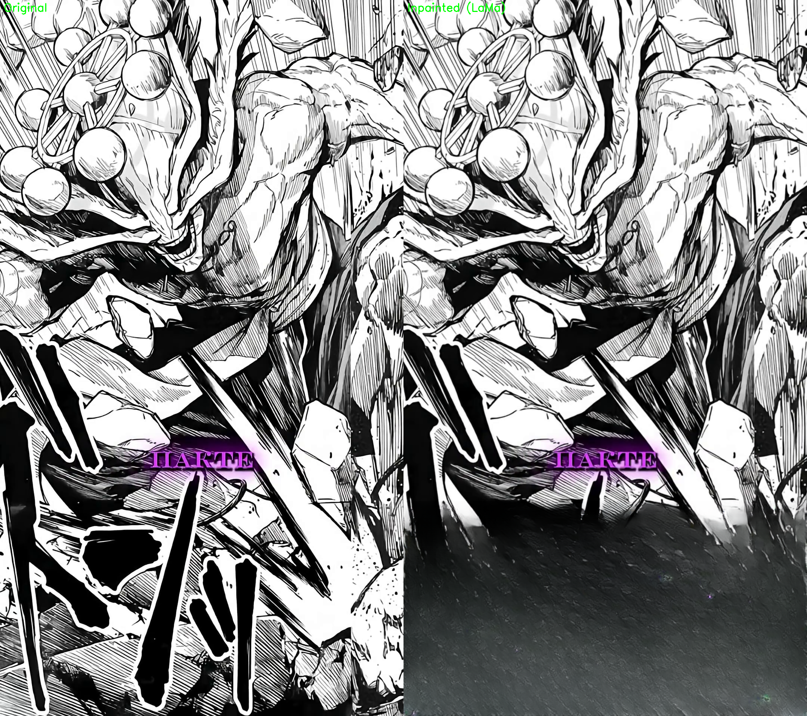

Video: mahoragatestcapsLOW3s.mp4 (3 seconds)
Engine: LaMaAdapter (big-lama.pt)
Mask: Bottom 30% rectangle (simulated subtitle region)
Result: Successful inpainting, bottom region filled with context

Left: Original frame | Right: After LaMa inpainting
Original dimensions: 1080x1920
Processing time: ~14 seconds (including model loading)
GPU used: RTX 2060 Mobile (6GB VRAM)
Model: big-lama.pt (FP16 enabled)
Adapter: src.infrastructure.inpainting.lama_adapter.LaMaAdapter
✅ Conclusion: LaMaAdapter successfully integrated into vastai_inerup and works on real video frames.